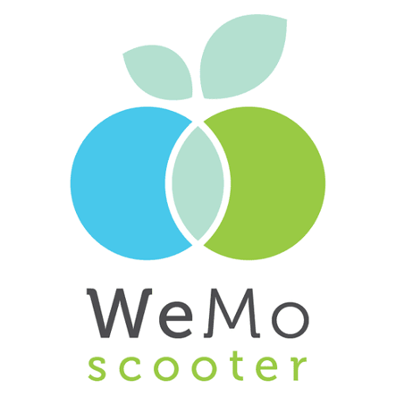
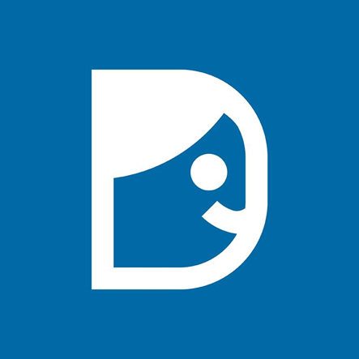

你好，我是郭昭廷(Timmy Kuo)
原任職於美商工程顧問公司(Stantec
Inc)，擔任資深土木/水資源工程師。
為解決繁瑣的工作，自學Python以爬蟲資料，加快工作效率；另由工作中啟發，想建立一個互動式網站平台(以Web
GIS方向實現)，將專業知識和網頁技術、軟體工程知識相互融合，提高資料的價值並擴大應用範疇，例如:河川水體水質污染圖台等。
透過學習軟體知識，開始追求原領域外的其他可能性，亦藉此踏入程式世界，產生濃厚興趣。
2023年年底辭去現職，以轉職成為全端軟體工程師為目標，持續自學中!
Linkedin

為了成為軟體工程師，做過什麼努力？若有具體作品請分享給我們
[程式初探]
身為土木/水資源工程師，我的主要工作為數值模式建置與分析，該崗位需要大量進資料處理、分析，以進行建模，並透過地理資訊系統(GIS)軟體將圖資、數值資料等數化，進行環域分析。在數據分析和環境分析方面，促使我進一步探索軟體開發領域，因為我相信這樣的技能和知識可以為我的專業帶來更多的價值。
因工作需要，我經常要下載、查詢政府公部門公開資料，如:中央氣象局雨量、水利署水利局水文、人口及水污染調查資料，為加速工作效率，我開始學習程式語言，以改善工作流程，在了解需求後，選定了「Python」作為開發工具，為了擴展相關技能和知識，我利用平日下班及週末時間，有段時間參加了台大資訊系統訓練班，後以自學為主，學習Python基礎知識。
Python可以用以處理大量時序資料，我首先應用網路爬蟲，將最常使用、要下載的資料以爬蟲方式處理，大幅縮短繁瑣、重複的工作時間，亦主動發起部門內部小組討論，協助其他同事使用程式碼提升工作效率，也因此獲得主管、同事們得賞識。透過這次學習經驗，我體會到了程式語言/軟體帶來的革新影響力，且在高強度、高工時的環境下，我仍能保持高昂的興趣，在有限的時間內完成了當初學習程式語言改善工作流程的目標，除激發對軟體/程式語言有更深的興趣外，也肯定自己的動力、學習心態。
[轉職的動機是一個漸變的過程]
在工程顧問公司的工作歷程中，我主要負責水質模式建置分析（校驗模型以預測各項水質數據變化）、水理模式建置分析（透過模式演算預測淹水範圍，並展示於地理資訊系統(GIS)上）、河川流域污染盤查（分析污染類別、計算污染量、統計資料等）、以及擔任政府公部門技術幕僚等職務。隨著公司內部選拔培訓的機會，我逐漸開始帶領2~4人的小團隊，形成了一個良好的職涯發展軌跡。儘管職務的多元性和領導小組的經驗帶來了滿足感，我仍然對轉職產生了興趣，這不是一時的衝動，而是一個漸變的過程。
我的工作角色猶如一位醫生，為河川流域做診斷，找出污染點，提出可以透過何種工程和非工程手段減少污染。同時，我也負責評估城市規劃區域和河堤的淹水風險，包括淹水的範圍和深度，以及如何規劃設計減洪設施等。這類型的工作需要大量的計算和複雜的資訊蒐集，有時很難以直觀的方式呈現整個工作的過程。傳統的水理和水質模式成果通常只呈現為數據線圖，例如河川不同里程位置上溶氧濃度變化對魚群分布的影響，或某區域雨水下水道可能造成的25,000立方公尺淹水量。在與民眾、各部會長官和業主進行說明時，這些資訊往往難以以淺顯易懂的方式呈現，或者無法進行有效的互動。
此外，土木水利領域是一個傳統而古老的領域，長時間的發展使得專業分工日益細緻。然而，現有的分析、規劃和設計方式與十幾年前相比並無顯著的變化。這讓我開始思考，如何在這個領域中加值，以更有效地利用這些豐富的資訊。我相信透過創新和現代科技的應用，可以讓我們更好地理解、呈現和應對這些複雜的水文和水質問題，並為整個領域帶來新的發展契機。
[將既有專業融合軟體知識，拓展職涯的可能]
在我的工作中，地理資訊系統(GIS)扮演了重要的角色，使得我能夠將各種資訊以數位形式納入系統中，例如集水區範圍（面資料）、污水下水道的地下建置情形（線資料）、河川流域的污染位置（點資料），以及某都市淹水位置與淹水量體之關係（點、面資料複合型分析應用）。然而，由於不同使用者的存在，這些資料可能產生各種不同的規格、樣式、以及圖層分類問題。有時，即使是同一小組成員進行不同區域的盤點，仍需花費額外的時間來進行統一修改，這樣的工作內容相當耗時且單調。
如果能夠將這些資訊有效地展示在一個平台上，工程師們可以使用既有的樣板快速將資訊數位化，從而減少不必要的工作。同時，如果需要向政府公部門展示，也無需再附上龐大而複雜的GIS檔案，從而大幅降低因設定檔不同而導致的跑版問題。另一方面，甚至可以簡化資料，將其開放給一般民眾使用，讓他們能夠自行套疊有用的圖資，進行數據下載（類似於淹水潛勢、土讓液化等的公開圖台網站）。這引發了我尋求透過軟體工程來改善和革新的契機。
透過開發一個更直觀、使用友好的網站平台，不僅可以提高工作效率，還能讓不同專業領域的使用者更輕鬆地利用資訊，這種融合專業知識和軟體工程的方式，不僅有助於解決眼前的問題，更有潛力帶來領域內的革命性變革，使我開始有了學習軟體的動機。
[跳脫既有框架限制，付出行動]
我的構想是建立一個互動式網站平台(想以Web
GIS方向實現)，將專業知識和網頁技術、軟體工程知識相互融合，提高資料的價值並擴大應用範疇，例如；河川水體水質污染圖台、都市區域淹水潛勢圖台等。
透過網頁地圖，讓民眾能夠通報污染情況，並迅速通知政府進行巡查；或者將傳統CAD工程圖檔數位化至網頁，方便工程人員進行檢修、工程師透過網站查找數化的管線資料等。透過程式語言和軟體知識，我開始追求除了土木水利領域之外的其他可能性。如:電動車樁分布、充電使用資訊在網頁上的呈現，以及登山團體行前的地圖識別網站等充滿興趣。自學程式語言一段時間後，我深感透過實踐產品開發和流程打造的成就感，這確定了我對這個領域的興趣。因此，我決定踏出更進一步的行動，以追求理想中的職涯。
[目前自學成果]
確定轉職後，我充分利用平日下班和假日的閒暇時間，透過線上資源如Udemy、YouTube、freeCodecamp，了解軟體工程師的工作範疇。我著重學習前端工程的基礎知識，並在確定了自己的興趣和志向後，從簡單的HTML、CSS樣式套疊著手。最近，我開始建立自己的個人網站，這不僅是為了建立個人品牌，也希望有一個地方可以撰寫和分享文章。以下是目前的成果連結，仍在持續進行建置中:
- 個人網站
- 自學期間的建立的筆記
- 近一個月嘗試透過freeCodecamp，強化學習記憶
如果參與這個計畫，會怎麼安排學習時間？
[現階段全職自學的方式]
目前透過線上資源的方式，展開了程式語言自學經歷。我的目標是優先建立前端工程的基礎知識，以實作的方式加深自己的印象，並效仿眾多軟體自學者經驗，撰寫個人筆記，這段期間培養了使用Notion做筆記的習慣，並透過ChatGPT來加速我的學習過程。
作筆記、養成自己的技術手冊，成為我學習過程中不可或缺的一部分。我在Notion中建立了一個專門的筆記區，用來整理和記錄我在課程中學到的知識點、實作的代碼片段以及一些個人的心得、筆記及有用的資訊。這種整理的習慣不僅有助於我更好地理解和記憶所學內容，還提供了一個方便的參考來源，當我需要回顧某個概念或代碼時，能夠快速的找到相關資訊。
在學習的過程中，我也意識到AI工具的強大用途，可以加速我的學習。在練習製作網站時，我會利用ChatGPT 進行程式碼的拆解和理解。這種即時的互動方式使我能夠快速解決問題，同時更深入地理解寫在面前的代碼。這段前端網頁的自學經驗不僅讓我獲得了實用的技能，還培養了一些重要的學習習慣。使用 Notion 做筆記的習慣和ChatGPT的應用，使我的學習效率大大提升。我期待將這些所學應用到未來的工作中，成為一名優秀的軟體工程師。
我已下定決心朝軟體工程師一職邁進，也深刻理解轉職過程的艱辛，我相信盡早準備才能跟上WeHelp進度，現階段全職學習的經驗將成為我的養分。目前學習JavaScript、Git中，每週約投入40小時以上，預計在開課前完成基礎的語法學習(並找一些練習實作，動手練習)；另針對我感興趣的WebGIS領域，展開資料蒐集，發想靈感。
[參與WeHelp計畫後的規劃]
以全職投入方式，參與WeHelp。依據各訓練階段，按部就班學習技術知識，並依照規定完成每週任務、撰寫學習日誌等，另我會參與實體活動，可以認識同學、交流想法。
由於現階段已安排學習進度，並養成建立個人技術筆記習慣，預計於WeHelp訓練期間，快速瀏覽教材影片(當作複習，檢視是否有遺漏重點等，此部分約佔20%)，以任務目標為導向，實作程式碼(此部分約占比80%，採用大量練習)。預計每日投入8~12小時，並於每日睡前Review個人筆記(當日紀錄的重點)，加強學習印象。
階段一的技術重點我會著重於JavaScript、Python的基礎語法練習、 MySQL 資料庫等，以銜接階段二的電商實務專案；階段二的學習內容涵蓋動態網頁、資料庫設計等前後端知識，此階段除大量探索前後端領域知識外，亦會發想階段三個人專案的內容、技術特點、前後端比重等問題。我希望按照WeHelp三階段的訓練達成轉職目標，預計於下半年轉職為軟體工程師。
是否有想要加入的軟體公司？為什麼想加入該公司？

WeMo 威摩科技股份有限公司
原專業大量應用GIS地理資訊系統，對於GIS領域頗有研究及興趣，期望能透過WebGIS形式將資料加值應用或分析，將原先累積的GIS分析專業及轉職軟體工程師後所獲得的技能，互相疊加，擴增職涯廣度，故期望加入GIS應用的軟體公司。而WeMo共享機車的軟體產品帶有這樣的特性，於地圖圖資上展示共享機車的各項資訊(如:車輛位置、電瓶電量、服務範圍等)，除使用者介面端的軟體功能的建置，我亦對後端使用者資訊的分析感興趣，如透過各類型API進行路線規劃、數據分析等。這類型的公司會是我優先考慮的對象。
Go WeMo

Dcard 狄卡科技股份有限公司
Dcard是一個社群媒體平台，社群平台在現今社會扮演著重要的角色，透過不同主題的分類，使用者可以在平台上面發布文章(或是商品買賣)。而Dcard亦是台灣主流社群平台之一，每日活躍使用人數眾多，其團隊對於如何處理高流量問題，提供流暢穩定的使用者體驗、包括基礎設施和資料庫設定和最佳化、快取機制、資料遷移等有著豐富的經驗，我對這類型的專業技術亦有很高的興趣，另Dcard目前正在拓展海外相關業務，我期許自己能夠加入這樣新創國際化的公司，加速相關技術累積。
Go Dcard新加坡商蝦皮娛樂電商有限公司
蝦皮是東南亞地區最具代表性的電子購物平台之一，我自己也經常在蝦皮購買商品，對於蝦皮軟體所構築的介面、推薦商品演算、金流服務、後端配送等一系列軟體技術非常佩服，能在競爭激烈的電商平台脫穎而出，必定有其獨到之處，是我心目中想加入的大型團隊，我想加入這樣的公司，除了能在技術上快速堆疊外，也透過在電商領域龍頭的腳色更深入這個產業。
Go Shopee請描述一件產生明顯負面情緒的經歷，如何處理該情緒？

轉職前我是一名土木/水資源工程師，在踏入職場後，我發現學校所學與工程顧問業界所需之技能仍有著很大的落差，我不知道如何設計工程、數值模型如何校驗證、參數的設定及背後的學理演算是如何進行、災損分析如何計算……等，我必須展現出韌性，才能在高強度且有限的時間內快速上手。
職涯初期，我在沒有相關經驗、且公司內部沒有人主導的狀況下接到一項任務:運用水質模式演算全國河川水體污染情形，預測水體污染情形，並具體分析改善規畫作為、將分析成果回報給工程設計組，提供改善工程設計時的依據，以利後續工程推動，時間限時4.5個月(需定期與副總報告)。面對陌生的挑戰，要如何在高壓產生的焦躁情緒下，短時間內獨自作業、產出成果呢?我的解決方法是排定工作計畫，以目標為導向、拆解成多個小任務，再依據優先程度排定執行方案，透過管理任務的方式，按部就班解決眼下遇到的挑戰，如此一來可有效降低焦躁情緒，並確保進度的執行。以下是我當時制定的工作流程策略:
-
前期規劃作業---數值模式需要大量data進行模式校驗證，盤點缺少甚麼資料，與部門主管商討增加調查經費的可能性，以規劃調查補充測量點位。
-
尋求技術支援---國內關於水質數值模式參考資料很少，申請從國外購買技術手冊，從官方文件中尋求解答；透過國外分公司尋求技術資源。
-
Team
Work---產出模式成果是優先任務，需空出時間，已熟悉之業務請求主管協調交接給其他同事完成。
-
定期回報進度、滾動式調整---反覆與同事、主管溝通，確保進度的同時，也透過同仁反向檢視成果，是否有缺漏或改進的空間。
-
完成模式建置---包含debug、校驗證，確保版本正確，彙整協作成果後與工程規劃組討論後續執行方向。
透過有效率的工作規劃，於3個半月內提前完成任務。過程雖然辛苦，經歷尋找資源、解決問題、橫向溝通、體驗跨國工程師協作等，也從過程中更認識自己，學習到在面對困難時，如何保持冷靜、韌性，適當尋求幫助，是我寶貴的職涯/人生經驗。